UDN
Search public documentation:
UnrealEdInterfaceJP
English Translation
한국어
Interested in the Unreal Engine?
Visit the Unreal Technology site.
Looking for jobs and company info?
Check out the Epic games site.
Questions about support via UDN?
Contact the UDN Staff
한국어
Interested in the Unreal Engine?
Visit the Unreal Technology site.
Looking for jobs and company info?
Check out the Epic games site.
Questions about support via UDN?
Contact the UDN Staff
UnrealEd マニュアル:インターフェース
本書の概要: Unreal Ed メインインターフェースの総合リファレンス。 本書の変更記録: Michiel Hendriks、v3323変更。前回の更新者: Jason Lentz (DemiurgeStudios)、関連文書へのリンク。原文著者: Tomasz Jachimczak (UdnStaff).- UnrealEd マニュアル:インターフェース
- 概要
- エディタの要点
- ドロップメニューオプション
- 一般エディタ機能
- ビルドおよび環境ボタン
- カメラとその他
- Camera Movement (カメラ動作)
- Edit Vertices (頂点の編集)
- Scale Brush (ブラシのスケーリング)
- Brush Rotate (ブラシの回転)
- Texture Pan (テクスチャ パン)
- Texture Rotate (テクスチャ回転)
- Brush Clipping Markers (ブラシクリッピングマーカー)
- Freehand Polygon Drawing (フリーハンド ポリゴン ドローイング)
- Face Drag (フェイス ドラッグ)
- Terrain Editor (テレイン エディタ)
- Matinee Editor (マチネ エディタ)
- Brush Clipping (ブラシクリッピング)
- Brush Primitives (ブラシ プリミティブ)
- CSG操作
- 選択範囲と動作速度
- Mirror Brush and Miscellaneous (ブラシをミラーとその他: 2107+のみで使用可能なボタン)
- カメラとその他
- ビューポート
- コマンドプロンプトと設定
概要
本書は、Unreal Editor インターフェースを対象としており、ビルド 3233に対応しています。インターフェースは各種セクションに分かれています。それぞれのセクションでは、Unreal Editorの操作における異なる側面を取り扱っています。本書には、機能の使用方法、ある特定の作業を完了する方法についての詳細を記載していますが、エディタで実際に何かを作成する具体的な方法については記載していません。開発者が別の文書を読んでいる際に、本書以外のどこにも説明されていない用語や方法について疑問が生じた時の参考文献として作成されています。エディタの要点
 インターフェースは8つのメイン セクションに分けることができます。それぞれの詳細は以下で説明します。本書の後半部分は、読者がこれらのセクションの内容、場所、役割を理解されていることを前提に説明を進めているため、これらのメインセクションに十分精通するまで、この部分を必ず良く読んでください。
インターフェースは8つのメイン セクションに分けることができます。それぞれの詳細は以下で説明します。本書の後半部分は、読者がこれらのセクションの内容、場所、役割を理解されていることを前提に説明を進めているため、これらのメインセクションに十分精通するまで、この部分を必ず良く読んでください。
ドロップメニューオプション
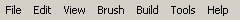
画面の一番上には次のメニューがあります。- File (ファイル): ファイルを保存、開き、環境をインポートおよびエクスポートします。
- Edit (編集): 選択範囲の変更、カット・ペースト、コピー、その他の機能。
- View (表示): テクスチャビューワー、プレハブ ブラウザ、アクタ、およびサーフェス プロパティなど、数多くの種類のウィンドウを見ることができます。
- Brush(ブラシ): このメニューには、現在ビルドに使用しているブラシを変更、ブラシをクリップ、環境にブラシをインポートおよびエクスポートするなど、いろいろなオプションがあります。
- Build (ビルド): エンジン自体内でレベルを再生テストし、環境をリビルドできます。ジオメトリ、ライティング、パス、その他のリビルドについては、それぞれ複数のオプション群があります。
- Tools(ツール): ブラシを作成し、粒子エミッタをリセットし、マップとライトのサイズを調整するのに便利なツールです。
- Help (ヘルプ): Tip of the Day (今日のヒント)、UDN (この文書です) および文脈依存ヘルプシステムといったオプションがあります。
一般エディタ機能
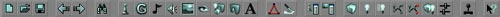
画面の上から2つめとして、一連のボタンがあります。これのボタンは、開く、保存する、リビルドするなど、主要な機能です。ここにある機能は環境のビルドに実際に使用されるものではなく、環境を作成した後に、様々な機能を実行するために使用されます。これらのオプションに関する詳細な情報を、以下に説明します。File(ファイル)オプション
 これらのボタンを使用して、新しいマップの作成、ファイルのオープン、または作業の保存を行います。これらのオプションは、トップメニューや、ショートカットキー(New: CTRL +N、Open: CTRL +O、Save: CTRL+L) からも使用できます。
これらのボタンを使用して、新しいマップの作成、ファイルのオープン、または作業の保存を行います。これらのオプションは、トップメニューや、ショートカットキー(New: CTRL +N、Open: CTRL +O、Save: CTRL+L) からも使用できます。
Undo (元に戻す) とRedo (やり直し)
Search for Actors (｢アクタ｣を検索)
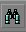
このツールを使用すると、環境内でアクタを検索できます。ボタンをクリックすると以下のウィンドウが開きますので、そこから現在のアクタをブラウズするか、名前、イベント、タグを指定することでアクタを検索できます。 構文: アクタを検索するには、アクタ名を入力 (たとえば、ブラシアクタをBrush0とできます。この場合、赤いビルダブラシで表示) します。アクタ名の入力を開始するとすぐ、利用可能なアクタのリスト内に、入力された名前と前方一致するアクタだけが表示されるようになります。そのため、「skyzone」 というアクタ1つと、「sunlight」アクタが2つある場合、「s」を入力したとき、アクタのリストは、sから始まる名前のアクタだけにしぼられます。引き続きアクタの名前を入力していくと、リストはさらに絞り込まれます。絞り込みでは、一致が見つからなくなるまで、または必要なレベルに達するまで入力を続けることができます。すべてのカメラをアクタおよびアクタの近隣に合わせるには、リスト内にあるアクタ名をダブルクリックしてください。リストを絞り込む機能は、3つのフィールド (Name、Event、Tag) のそれぞれについて機能します。これらのフィールドは、相互に組み合わせて使用することもできます (たとえば、「start_explosion」というイベントを経由して別のアクタを起動するトリガを検索したい場合は、Nameに「trigger」、Eventに「start」と入力します。これにより、「start」から始まる名前のイベントを持つ、トリガのみが表示されます。ほぼ間違いなくこの中にお探しのアクタがあるはずです。) Nameフィールドに入力しはじめるとすぐ、その文字で始まる名前を持つ最初のアクタがウィンドウ内でアクティブになります。お探しのアクタを見つけたら、左側のリスト内でそれをダブルクリックします。これによって、そのアクタがハイライト表示され、2Dウィンドウ内においてアクタにフォーカスが移ります。3Dウィンドウ内でも、カメラがアクタに近づき、ほとんどの場合アクタの方向を向きます。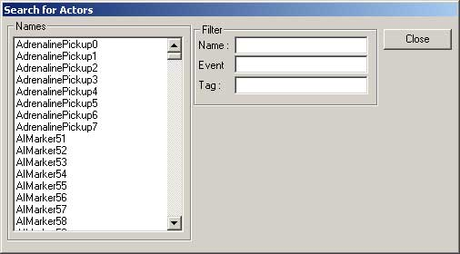
ブラウザ
 これらのボタンをクリックするとブラウザが開きます。ブラウザには次の種類があります(左から右の順)。
これらのボタンをクリックするとブラウザが開きます。ブラウザには次の種類があります(左から右の順)。
Actor Browser (アクタブラウザ)
 アクタ ブラウザを使用すると、Unrealエンジン内でアクタクラスをブラウズすることができます。エディタによってロードされているあらゆるクラスをブラウズできます。追加のクラスをブラウザにロードして使用することもできます。クラスはエディタ内で開かれ、その環境内に特定のアクタを配置できます。クラスをダブルクリックすると、アクタの実際のソースコードが開くため、そこでソースコードを変更できます。ソースコードを編集したら、パッケージを再コンパイルする必要があります。
選択したアクタを、アクタリストから環境に配置するには、まずアクタをハイライトします(以下の例ではSunlightアクタで、Actor > Info > Light > Sunlightで指定)。入れ子構造になったアクタの横にあるプラスとマイナスの印は、階層ツリーを展開・閉じるために使用します。必要なアクタを選択したら、エディタウィンドウ内の1つで右クリックします。そして、リストで選択したアクタを、クリックした部分に挿入します(スペースが許す限り)。以下の図は、右クリックした後に、このアクタを配置するオプションを選択した状態を示しています。
アクタ ブラウザを使用すると、Unrealエンジン内でアクタクラスをブラウズすることができます。エディタによってロードされているあらゆるクラスをブラウズできます。追加のクラスをブラウザにロードして使用することもできます。クラスはエディタ内で開かれ、その環境内に特定のアクタを配置できます。クラスをダブルクリックすると、アクタの実際のソースコードが開くため、そこでソースコードを変更できます。ソースコードを編集したら、パッケージを再コンパイルする必要があります。
選択したアクタを、アクタリストから環境に配置するには、まずアクタをハイライトします(以下の例ではSunlightアクタで、Actor > Info > Light > Sunlightで指定)。入れ子構造になったアクタの横にあるプラスとマイナスの印は、階層ツリーを展開・閉じるために使用します。必要なアクタを選択したら、エディタウィンドウ内の1つで右クリックします。そして、リストで選択したアクタを、クリックした部分に挿入します(スペースが許す限り)。以下の図は、右クリックした後に、このアクタを配置するオプションを選択した状態を示しています。

Group Browser (グループブラウザ)
 グループブラウザを使用して、アクタをグループにまとめることができます。アクタをグループ化することで、グループを見つけたり、情報を編集したり、または変更したりする作業が容易になります。特定のグループのチェックマークが入っていない場合は、エディタ内のビューには表示されていません。
グループブラウザを使用して、アクタをグループにまとめることができます。アクタをグループ化することで、グループを見つけたり、情報を編集したり、または変更したりする作業が容易になります。特定のグループのチェックマークが入っていない場合は、エディタ内のビューには表示されていません。
 ブラウザ内に新しいグループを作成するには、[Create New Group](新規グループを作成)をクリックします。注: 新規グループを作成するには、エディタ内で少なくとも1つのアクタを選択した状態でなければなりません。
*グループの例: *
この例では、道路バリケードからグループを作成し、それを表示/非表示にします。道路の障害物はグループ化にぴったりです。すべてのブラシが1カ所にかたまっており、1つのグループとして表示したり非表示にしたりしたいブラシの集まりを形成しています。
ブラウザ内に新しいグループを作成するには、[Create New Group](新規グループを作成)をクリックします。注: 新規グループを作成するには、エディタ内で少なくとも1つのアクタを選択した状態でなければなりません。
*グループの例: *
この例では、道路バリケードからグループを作成し、それを表示/非表示にします。道路の障害物はグループ化にぴったりです。すべてのブラシが1カ所にかたまっており、1つのグループとして表示したり非表示にしたりしたいブラシの集まりを形成しています。
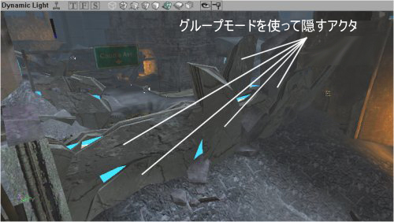
そこで、まずグループに追加したい最初のブラシを選択した状態で、ブラウザ内の [Create New Group] ボタンをクリックして新しいグループを作成します。そして、グループに付けたい名前を入力して、Enterキーを押します (これでグループが作成されます)。 新しいグループが作成されれば、以下のプロンプトが表示され、グループ名を入力するよう指示します。複数のアクタを選択した状態でも新規グループを作成できることを覚えておいてください。
新しいグループが作成されれば、以下のプロンプトが表示され、グループ名を入力するよう指示します。複数のアクタを選択した状態でも新規グループを作成できることを覚えておいてください。
 グループ ブラウザ内には3つのボタンがあり、これらのボタンを使用して現在のグループに新規アクタを追加し、選択中のアクタをグループから削除し、グループリストを更新することができます。リストの更新(Refresh)を使うことによるメリットは今のところありません。グループ操作中は、アクションが実行される度に、自動的にリストが更新されているためです
グループ ブラウザ内には3つのボタンがあり、これらのボタンを使用して現在のグループに新規アクタを追加し、選択中のアクタをグループから削除し、グループリストを更新することができます。リストの更新(Refresh)を使うことによるメリットは今のところありません。グループ操作中は、アクションが実行される度に、自動的にリストが更新されているためです
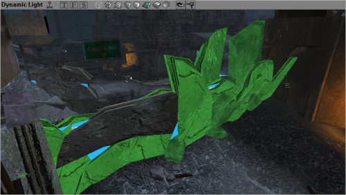
3Dビューポート内で追加のブラシが選択されています。ここで、ブラウザ内の[Add Selected Actors to Group] (選択中のアクタをグループに追加) ボタンを選択してこれらのブラシをグループに追加します。このステップで、グループに追加したいすべてのブラシの追加が完了しました。この環境で作業を進める際に、これらのアクタを見る必要はありません。そのためビューから隠して、エディタ内のエンジン レンダリング システムをスピードアップしましょう。グループブラウザ内でグループ名のチェックマークを外すと、グループは非表示になります。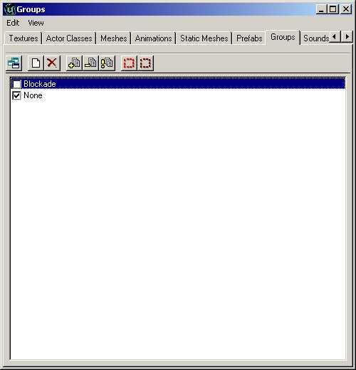
これで、エディタの3Dビューポート内で、背後にあるシーンと、すべての作業結果を見ることができます。つまり、障害物がそこに存在していますが、完全に透明になっています。再表示するには、グループブラウザ内でグループのチェックマークを入れるだけです。
 また、特定のアクタを素早く選択・選択解除するためにグループを使用することもできます。ある部屋の1組のライトをグループ化し、それをまとめて明るくする場合、または、1組のアンビエントサウンドのボリュームを変更する場合、グループブラウザ内の2つのボタンで特定のグループに属するすべてのアクタを選択できます。
追加注意事項
アクタが属するグループの数はまちまちです。アクタが属するグループが1つでも非表示になっている場合、アクタは表示されません。そのため、アクタが3つのグループに属していて、そのうちの1グループが非表示の場合、他の2つのグループが表示されていても、そのアクタは非表示のままとなります。
もちろん、グループに入れることができるアクタはブラシとメッシュだけではありません。選択できるアクタであれば何でも、グループメニューを使って非表示にできます。
BSPブラシなど一部のアクタは、3Dビュー内で常に表示されます。ただし、2Dビューでは完全に非表示にすることができます。この例では、シートブラシ (「Portal」とあちこちに書かれた青いテクスチャ) が非表示になっていても、3Dビュー内ではBSPエリアとして表示されたままとなっており、メッシュやその他のアクタのように簡単に非表示にできません。
グループの使用についての追加情報は、GroupsBrowser (グループブラウザ)文書を参照してください。
また、特定のアクタを素早く選択・選択解除するためにグループを使用することもできます。ある部屋の1組のライトをグループ化し、それをまとめて明るくする場合、または、1組のアンビエントサウンドのボリュームを変更する場合、グループブラウザ内の2つのボタンで特定のグループに属するすべてのアクタを選択できます。
追加注意事項
アクタが属するグループの数はまちまちです。アクタが属するグループが1つでも非表示になっている場合、アクタは表示されません。そのため、アクタが3つのグループに属していて、そのうちの1グループが非表示の場合、他の2つのグループが表示されていても、そのアクタは非表示のままとなります。
もちろん、グループに入れることができるアクタはブラシとメッシュだけではありません。選択できるアクタであれば何でも、グループメニューを使って非表示にできます。
BSPブラシなど一部のアクタは、3Dビュー内で常に表示されます。ただし、2Dビューでは完全に非表示にすることができます。この例では、シートブラシ (「Portal」とあちこちに書かれた青いテクスチャ) が非表示になっていても、3Dビュー内ではBSPエリアとして表示されたままとなっており、メッシュやその他のアクタのように簡単に非表示にできません。
グループの使用についての追加情報は、GroupsBrowser (グループブラウザ)文書を参照してください。
Music Browser (ミュージックブラウザ)
 ミュージックブラウザはサウンドブラウザに似ています。このブラウザを使用して、音楽ファイルを開き、聞くことができます。音楽ファイルは.umxフォーマットで保存されます。つまり、サウンドファイルとは違って、(楽器用のサウンドサンプルがこのファイルに含まれていることを除き) midiファイルにより近い形式となります。.umxフォーマットは、サポートされなくなりましたので、このブラウザを使用するメリットはありません。
ミュージックブラウザはサウンドブラウザに似ています。このブラウザを使用して、音楽ファイルを開き、聞くことができます。音楽ファイルは.umxフォーマットで保存されます。つまり、サウンドファイルとは違って、(楽器用のサウンドサンプルがこのファイルに含まれていることを除き) midiファイルにより近い形式となります。.umxフォーマットは、サポートされなくなりましたので、このブラウザを使用するメリットはありません。
Sound Browser (サウンドブラウザ)
 サウンド ブラウザを使用して、Unrealサウンドパッケージを開き、再生、検索できます。また、新しいサウンドパッケージを作成、新しいサウンドを現在のパッケージに挿入するなど、様々な方法で使用できます。
サウンドアクタの詳細は、ExampleMapsSounds(マップサウンド例) 文書を参照してください。
サウンド ブラウザを使用して、Unrealサウンドパッケージを開き、再生、検索できます。また、新しいサウンドパッケージを作成、新しいサウンドを現在のパッケージに挿入するなど、様々な方法で使用できます。
サウンドアクタの詳細は、ExampleMapsSounds(マップサウンド例) 文書を参照してください。
Texture Browser (テクスチャブラウザ)
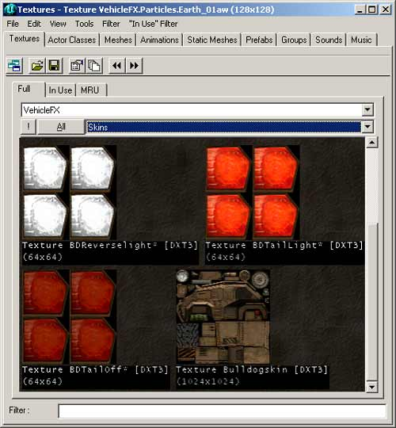
その他のブラウザと同様、テクスチャブラウザを使用してテクスチャパッケージを開き、パッケージ内の様々なカテゴリをソートし、新規パッケージを作成し、新しいテクスチャをパッケージに挿入できます。必要なテクスチャをより効率的に見つけるために、フィルタオプションを使用することもできます。フィルタは、フィルタフィールドに入力された文字列がテクスチャ名に含まれるかどうかチェックし (名前の前方一致だけでなくどの部分でも)、存在しない場合、テクスチャは非表示になります。 多くのテクスチャパッケージは、整理しやすいようグループに副分割されます。上記の図ではグループ [Skins] が開いているため、Skinグループのテクスチャのみが、ブラウザ内で表示されています。その他のグループを選択するには、グループフィールド (Skinsと表示された欄) をクリックして、希望のグループを選択します。あるいは、[All] ボタンをクリックするだけで、パッケージ内のすべてのテクスチャを表示することができます。あるいは、[All] ボタンの左側には、[!] ボタンがあります。これをクリックすると、テクスチャすべてがリアルタイムで表示されます。これは、ほとんどのテクスチャについては影響がありませんが、アニメーション化されたテクスチャ、または特別な環境マップシェーダーの場合、ゲーム中に表示される通りの表示となります。 さらに、テクスチャブラウザには、[In-Use] (使用中)、[MRU]、または[Most Recently Used] (最近使用したテクスチャ) 設定があります。これらを使用して、環境内で現在使用中のテクスチャを表示し、また、最近使用されたテクスチャに素早くアクセスできます。Mesh Browser (メッシュブラウザ)
 メッシュブラウザを使用して、システムファイル内のメッシュを検索できます。これらのメッシュは、装飾目的だけでなく、別のアクタによってレンダリング用に呼び出される目的で使用できます (ピックアップが良い例です)。メッシュ、メッシュ特有のアニメーションを表示し、一番下にあるスクロールバーを使うと、特定の位置のアニメーションまでスキップすることができます。さらに、再生ボタンを押すと、アニメーションがループされます。そのため、アニメーションが連続して実行される様子を見ることができます。すべてのアニメーションがループに適しているわけではないことにご注意ください。たとえば、歩くアニメーションはループに適していますが、兵士が死ぬアニメーションはループに適していません (メッシュの開始フレームは最後のフレームとは大きく異なります。そのため、メッシュが1つのフレームからもう1つのフレームにジャンプしているように見える場合があります)。
メッシュブラウザを使用して、システムファイル内のメッシュを検索できます。これらのメッシュは、装飾目的だけでなく、別のアクタによってレンダリング用に呼び出される目的で使用できます (ピックアップが良い例です)。メッシュ、メッシュ特有のアニメーションを表示し、一番下にあるスクロールバーを使うと、特定の位置のアニメーションまでスキップすることができます。さらに、再生ボタンを押すと、アニメーションがループされます。そのため、アニメーションが連続して実行される様子を見ることができます。すべてのアニメーションがループに適しているわけではないことにご注意ください。たとえば、歩くアニメーションはループに適していますが、兵士が死ぬアニメーションはループに適していません (メッシュの開始フレームは最後のフレームとは大きく異なります。そのため、メッシュが1つのフレームからもう1つのフレームにジャンプしているように見える場合があります)。
Prefab Browser (プレハブブラウザ)
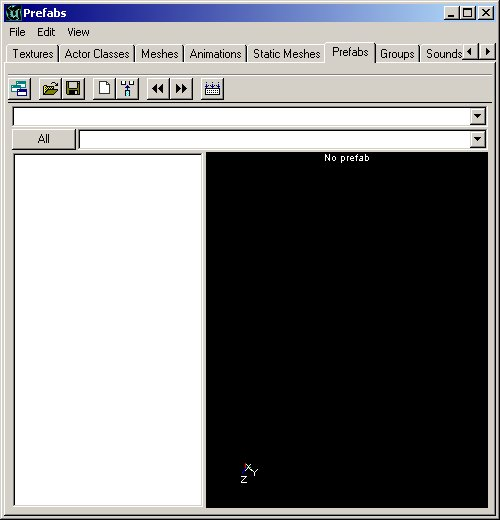
プレハブブラウザを使用すると、アクタの「パッケージ」を作成し、グループとして環境にペーストできるブラシを作成できます。ブラウザはプレハブの情報を別々のファイルとして保存します。そのため、1つのレベルのプレハブファイルを別のレベルで簡単に使用できます。プレハブが環境に配置され次第、パッケージファイルがなくてもプレハブを環境内で表示できることにご注意ください(ただし、今後使用するために保存しておくとよいでしょう)。プレハブパッケージは、.t3dファイルとして保存されます。このフィルには、アクタ、ブラシ、そしてUnreal環境内にあるあらゆる情報を含めることができます。 プレハブが環境に配置されると、個別のアクタが手動で配置されたかのように見えますが、実際には作業が軽減されています。個別アクタと、プレハブを経由して配置されたアクタの間に違いはありません。プレハブが配置され次第、追加された他のプレハブに影響することなく、それぞれを変更することができます。Static Mesh Browser (静的メッシュブラウザ)
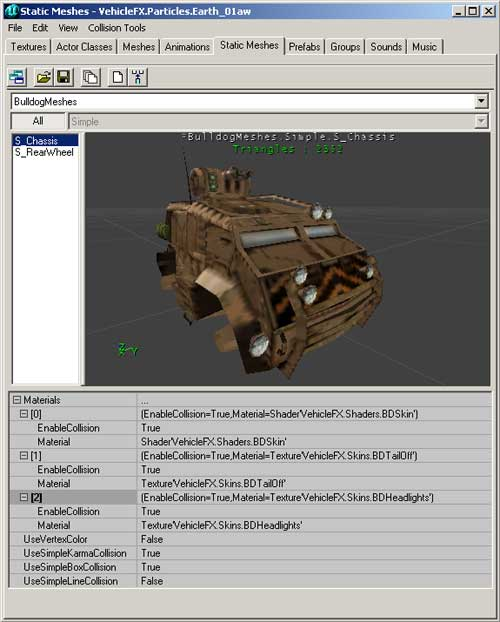
静的メッシュブラウザを使用すると、パッケージファイル内にある静的メッシュを表示し、新しい静的メッシュを環境に追加し、環境内の選択範囲から静的メッシュを作成することもできます。静的メッシュはアニメーションデータ (そのため名前も) を含まないため、静的メッシュの作成にはアニメーションのないアイテムのみ使用できます。 静的メッシュと、静的メッシュブラウザの詳細は、「静的メッシュチュートリアル」を参照してください。Animation Browser (アニメーションブラウザ)
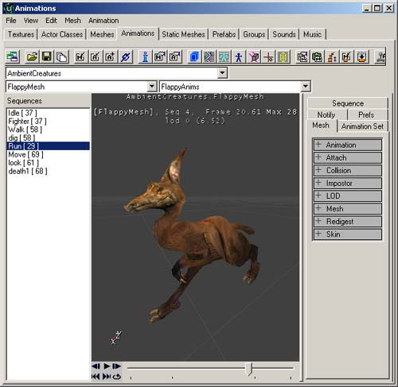
アニメーションブラウザを使用すると、メッシュ、骨格ストラクチャ、影響、その他の数多くのアニメーション プロパティの詳細を表示できます。また、骨格メッシュをインポートし、その他のアニメーション機能を使用できます。 詳細は、AnimBrowserTutorial(アニメーション ブラウザ チュートリアル)とAnimBrowserReference(アニメーション ブラウザ リファレンス)文書を参照してください。2D シェイプ エディタとUnrealScriptエディタ
 これらの2つのボタンは、2Dシェイプ エディタとUnrealScriptエディタを開くために使用されます。
これらの2つのボタンは、2Dシェイプ エディタとUnrealScriptエディタを開くために使用されます。
2D Shape Editor (2Dシェイプ エディタ)
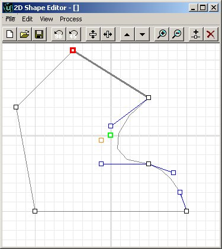
2Dシェイプ エディタを使用すると、プリミティブより複雑な形状を作成することができます。ただし、極めて複雑な形状は作成できません (たとえば3DMaxが作成できるようなもの)。このツールに関してより詳しい情報は、「2D ShapeEditor」(2Dシェイプエディタ文書)に記載されています。 機能が限られており、ハイエンド ソフトウェアの代替となるようには設計されていません。UnrealScriptエディタ
 Unrealエディタと共に提供されるUrealScriptエディタは簡単なテキスト編集ツールです。これを利用して、パッケージクラスに変更を加えることができます。このツールがあれば非常に便利ですが、大きなコードや複雑なコードの作成には適していません。UDE?のような強力なエディタも利用できますが、どのテキストエディタでも十分です。ただし、コードの何行かを素早く変更する必要がある場合は、UnrealScriptエディタが便利です。また、すべてのスクリプトをコンパイルして、パッケージファイルにする機能もあります。
Unrealエディタと共に提供されるUrealScriptエディタは簡単なテキスト編集ツールです。これを利用して、パッケージクラスに変更を加えることができます。このツールがあれば非常に便利ですが、大きなコードや複雑なコードの作成には適していません。UDE?のような強力なエディタも利用できますが、どのテキストエディタでも十分です。ただし、コードの何行かを素早く変更する必要がある場合は、UnrealScriptエディタが便利です。また、すべてのスクリプトをコンパイルして、パッケージファイルにする機能もあります。
プロパティブラウザ
 この2つのボタンを使用して、UnrealScriptエディタ内でプロパティ アクタを開くことができます。ボタンはそれぞれ、アクタ プロパティとサーフェス プロパティを開きます。
この2つのボタンを使用して、UnrealScriptエディタ内でプロパティ アクタを開くことができます。ボタンはそれぞれ、アクタ プロパティとサーフェス プロパティを開きます。
アクタ プロパティ
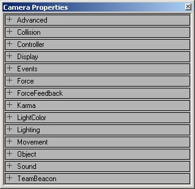
アクタプロパティ ブラウザを使用して、特定のアクタに保存された情報を表示および変更できます。保存されている情報には、アクタ名、アクタのプロパティ (たとえば、ライトの明るさ、トリガされるイベント名、ゾーン重力) に加え、その他多くの項目があります。アクタブラウザでは、アクタクラス全体ではなく、特定のアクタについてこれらの項目を変更できます。プロパティの例を見るには、アクタのデフォルト設定が記載された「ActorVariables」(アクタ変数)文書を参照してください。サーフェス プロパティ
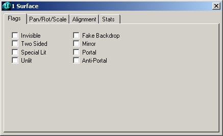
サーフェス プロパティ ウィンドウを使用して、選択されたサーフェスのプロパティを変更できます。サーフェスを選択するには、3Dビュー内でクリックします。また、CTRLキーを押しながら複数のサーフェスをクリックすることで複数のサーフェスを選択できます。サーフェスを右クリックして[SELECT SURFACES] > [Option]を選択してサーフェスを選択することもできます。ここから、隣接したサーフェスや、類似したタイプのサーフェス、またはその他多数のサーフェスを自動的に選択することもできます (メニューに表示されているショートカットキーは追加のサーフェス選択に使用されます)。リビルドおよびリビルド オプション
 このボタンはすべて、環境のリビルド (またはコンパイル) を処理します。これらのボタンの一部は、UT2K3ビルドでのみ提供されています。左から右の順で、ボタンを説明します。
このボタンはすべて、環境のリビルド (またはコンパイル) を処理します。これらのボタンの一部は、UT2K3ビルドでのみ提供されています。左から右の順で、ボタンを説明します。
Build Geometry (ジオメトリをビルド)
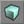
このボタンを使用して、環境内で実際のジオメトリをリビルドします。ジオメトリは、ワールドを構成する実際のブラシです。これで、環境のBSPを作成します (既に作成されている場合は再作成)。Build Lighting (ライティングをビルド)
 ライティングをリビルドすると、環境内にあるすべてのライトアクタのライト設定がレンダリングされます。これは、正しいライティングを生成するために必要です。新しいジオメトリを環境に配置したときに、ジオメトリに正しく光が当たった状態になっていません。そのため、エンジン内でレンダリングする前に、ライティングをリビルドする必要があります。
ライティングをリビルドすると、環境内にあるすべてのライトアクタのライト設定がレンダリングされます。これは、正しいライティングを生成するために必要です。新しいジオメトリを環境に配置したときに、ジオメトリに正しく光が当たった状態になっていません。そのため、エンジン内でレンダリングする前に、ライティングをリビルドする必要があります。
Build Changed Lighting (変更されたライティングをビルド)
 このボタンは「ライティングをビルド」ボタンのような機能を果たしますが、追加または変更されたライトのみをリビルドするため、リビルドが高速になります。
このボタンは「ライティングをビルド」ボタンのような機能を果たしますが、追加または変更されたライトのみをリビルドするため、リビルドが高速になります。
Build Paths (パスをビルド)
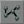
パスがボットまたはクリーチャーのいずれに使用されている場合でも、AIによって使用される前にパスをビルドする必要があります。パスは多くの種類のアクタから構成されています。パスをリビルドすると、AIが従うパスが、パスベースのアクタの現在位置に基づいて作成されます。Build Changed Paths (変更されたパスをビルド: 2107+でのみ提供)
 (この機能はビルド2107以上でのみ提供されています)
このボタンも、[Build Paths](パスをビルド)ボタンのような機能を果たしますが、追加・変更されたパスのみをリビルドするため、リビルドが高速になります。
(この機能はビルド2107以上でのみ提供されています)
このボタンも、[Build Paths](パスをビルド)ボタンのような機能を果たしますが、追加・変更されたパスのみをリビルドするため、リビルドが高速になります。
Build All (すべてビルド)
 このオプションは、ユーザのリビルド設定 (次で説明するオプションで変更できます) に基づいてマップ全体をリビルドします。ジオメトリ、BSP、ライティング、パスを自動的にリビルドするよう設定できます。リビルドオプションで、チェックマークを外されている項目については、このボタンをクリックしてもリビルドされません。
このオプションは、ユーザのリビルド設定 (次で説明するオプションで変更できます) に基づいてマップ全体をリビルドします。ジオメトリ、BSP、ライティング、パスを自動的にリビルドするよう設定できます。リビルドオプションで、チェックマークを外されている項目については、このボタンをクリックしてもリビルドされません。
Build Options (ビルドオプション)
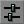
このオプションを使用すると、現在のリビルドオプションを変更できます。またこの設定を使って、環境をすぐにリビルドするか、後で [Rebuild All] (すべてリビルド) ボタンを使用してリビルドできます。
Play Map (マップを再生)
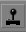
このボタンをクリックすると、現在のマップをUnrealエンジンにロードし、まるでプレーヤがゲームを再生しているかのように、再生を開始します。これによって、トリガされるイベントをテストして、エンジンで直接再生される時、環境がどのように表示されるかを知ることができます。ビルドおよび環境ボタン
 メニューの下、画面の左側にツールバーがあります。これらのボタンはすべて、実際にワールドを作成するために使用されます。これらのボタンは6つのセクションに別れており、役割別にボタンがグループ化されています。各セクションを、上から下に向かって説明していきます。
メニューの下、画面の左側にツールバーがあります。これらのボタンはすべて、実際にワールドを作成するために使用されます。これらのボタンは6つのセクションに別れており、役割別にボタンがグループ化されています。各セクションを、上から下に向かって説明していきます。
カメラとその他
 これらのオプションを使用して、カメラを移動、ブラシのサイズを変更、テクスチャを調整に加え、その他のいくつかの処理を行えます。
これらのオプションを使用して、カメラを移動、ブラシのサイズを変更、テクスチャを調整に加え、その他のいくつかの処理を行えます。
Camera Movement (カメラ動作)
 このオプションを選択すると、カメラを画面のビューポート内で自由に動かすことができます。「カメラとその他」セクションから別のオプションを選択しても、自由にカメラを動かすことができますが、別のオプションも利用可能です。
このオプションを選択すると、カメラを画面のビューポート内で自由に動かすことができます。「カメラとその他」セクションから別のオプションを選択しても、自由にカメラを動かすことができますが、別のオプションも利用可能です。
Edit Vertices (頂点の編集)
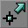
このボタンをクリックすると、頂点編集モードになります。このモードを選択しなくても頂点を編集することはできますが、この機能を選択しておくと、ビューポート内で表示された状態よりも、頂点編集が容易になります。Scale Brush (ブラシのスケーリング)
 この機能を使用して、選択したブラシを拡大・縮小できます。ブラシを拡大縮小するには、機能を選択し、次に2Dビューポート(ビューポートに関する詳細は本書の該当箇所を参照) または3Dビューポート (この機能は3Dビューポートでも使用できますが、2Dモードの方が正しい軸を見つけやすくなります)内で拡大縮小したいブラシを選択します。[CTRL] キーを押したまま、左または右マウスボタンを押した状態でマウスをドラッグします。これによって、軸に対してブラシを拡大縮小します。左マウスボタンは1つの軸に対して拡大縮小し、右マウスボタンはもう1つの軸に対して拡大縮小します。このため、軸につき1つのボタンを使用できる2Dビューを使用した方が、拡大縮小が容易です。3Dビューポートでは、軸が表示されません。
注:ブラシのスケーリングを行うと、ブラシがグリッドから外れます。
この機能を使用して、選択したブラシを拡大・縮小できます。ブラシを拡大縮小するには、機能を選択し、次に2Dビューポート(ビューポートに関する詳細は本書の該当箇所を参照) または3Dビューポート (この機能は3Dビューポートでも使用できますが、2Dモードの方が正しい軸を見つけやすくなります)内で拡大縮小したいブラシを選択します。[CTRL] キーを押したまま、左または右マウスボタンを押した状態でマウスをドラッグします。これによって、軸に対してブラシを拡大縮小します。左マウスボタンは1つの軸に対して拡大縮小し、右マウスボタンはもう1つの軸に対して拡大縮小します。このため、軸につき1つのボタンを使用できる2Dビューを使用した方が、拡大縮小が容易です。3Dビューポートでは、軸が表示されません。
注:ブラシのスケーリングを行うと、ブラシがグリッドから外れます。
Brush Rotate (ブラシの回転)
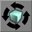
この機能を使用すると、ビューポート内の3つの軸すべてに基づいてブラシを回転できます。CTRLキーを押したままマウスの右ボタンをドラッグすることで任意のブラシを回転することができます。ただし、この方法ではブラシをビューポート内の1つの軸のみを中心に回転されます。この機能が選択された状態で、同じビューポート内で3つのそれぞれの軸を中心にブラシを回転できます。 これを行うには、[Rotate Brush] (ブラシの回転) ボタンを選択し、CRTLキーを押したままマウスの左ボタン、右ボタン、または両方のマウスボタンをドラッグします。その組み合わせによって、異なる軸を中心にブラシが回転します。ブラシは常に回転の中心点 (つまり、頂点編集されていないほとんどのプリミティブの中点、別のブラシとの交差で作成された中心点、または最後に移動または選択された頂点) を中心に回転することに注意してください。Texture Pan (テクスチャ パン)
 この機能を使用すると、ブラシのサーフェス全体をパンできます。この機能では、テクスチャの自動パンをオンにしませんが、ブラシのサーフェス上でテクスチャをスライドさせて、必要な場所ぴったりに調整することができます。この機能は、3Dビューでのみ正しく機能します (3Dビューではテクスチャを目で見ることができるため)。テクスチャをパンするには、この機能を選択し、次に3Dビューでサーフェスを左クリックしてテクスチャを選択し (ハイライト状態になります。CTRLキーを押したまま選択することで複数のテクスチャを選択可能)、左または右マウスボタンを押したままドラッグします。左ボタンは、Uテクスチャ軸をドラッグし、右ボタンはVテクスチャ軸をドラッグします。
テクスチャがブラシ上で回転済みの場合、ドラッグは元のテクスチャ軸に沿って行われることにご注意ください。
この機能を使用すると、ブラシのサーフェス全体をパンできます。この機能では、テクスチャの自動パンをオンにしませんが、ブラシのサーフェス上でテクスチャをスライドさせて、必要な場所ぴったりに調整することができます。この機能は、3Dビューでのみ正しく機能します (3Dビューではテクスチャを目で見ることができるため)。テクスチャをパンするには、この機能を選択し、次に3Dビューでサーフェスを左クリックしてテクスチャを選択し (ハイライト状態になります。CTRLキーを押したまま選択することで複数のテクスチャを選択可能)、左または右マウスボタンを押したままドラッグします。左ボタンは、Uテクスチャ軸をドラッグし、右ボタンはVテクスチャ軸をドラッグします。
テクスチャがブラシ上で回転済みの場合、ドラッグは元のテクスチャ軸に沿って行われることにご注意ください。
Texture Rotate (テクスチャ回転)
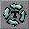
このボタンはテクスチャのパン機能に類似した機能で、ブラシをまったく動かすことなく、ブラシのサーフェスのテクスチャを回転します。テクスチャは、ブラシの頂点を中心に回転します。頂点は自動的に選択され、この頂点を変更する方法はありません。 テクスチャを回転するには、[Pan Textures] ボタンを選択し、次に3Dビューでサーフェスを左クリックしてテクスチャを選択し (ハイライト状態になります。CTRLキーを押したまま選択することで複数のテクスチャを選択可能)、CTRLキーを押しながら左または右マウスボタンを押したままドラッグします。ドラッグするに従い、サーフェスが回転するのを見ることができます。ドラッグが大きいほど、回転が大きくなります。Brush Clipping Markers (ブラシクリッピングマーカー)
 この機能を使用して、ブラシクリッピングマーカーを配置できます。マーカーを配置するには、CTRLキーを押しながら、配置したい場所を左クリックします。最初のクリッピングポイントは2Dビューに配置されます。次に、ビューに追加のマーカーを追加し、クリッピングプレーンを作成します。クリッピングプレーンの定義には、3マーカーまでしか使用できません。クリッピングプレーンが定義されるとき、プレーンの中央からブラシのクリップ方向へ細い線が描かれ、クリッピングプレーンの方向が表示されます。この方向を示すマーカーは反転(フリップ)できます (詳細は、以下のブラシクリッピング セクションで説明します)。ツールバー上でブラシクリッピング機能の選択を解除すると、配置したマーカーが失われることにご注意ください。
この機能を使用して、ブラシクリッピングマーカーを配置できます。マーカーを配置するには、CTRLキーを押しながら、配置したい場所を左クリックします。最初のクリッピングポイントは2Dビューに配置されます。次に、ビューに追加のマーカーを追加し、クリッピングプレーンを作成します。クリッピングプレーンの定義には、3マーカーまでしか使用できません。クリッピングプレーンが定義されるとき、プレーンの中央からブラシのクリップ方向へ細い線が描かれ、クリッピングプレーンの方向が表示されます。この方向を示すマーカーは反転(フリップ)できます (詳細は、以下のブラシクリッピング セクションで説明します)。ツールバー上でブラシクリッピング機能の選択を解除すると、配置したマーカーが失われることにご注意ください。
Freehand Polygon Drawing (フリーハンド ポリゴン ドローイング)
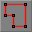
エディタのこの強力な機能を使用すると、必要な形のアウトラインを描き、押し出す (2Dオブジェクトを3Dに効果的に引き延ばす)だけで、3Dブラシを作成できます。 この機能を実行するには、[Freehand Polygon Drawing] (フリーハンドポリゴン描画) ボタンを選択し、CTRLキーを押しながらビューを右クリックして、頂点を追加します。頂点を次に追加したい点までマウスを動かし、もう一度右クリックします。2つの点をつなぐ赤い線が表示されます。3つ以上の頂点を指定したら、フリーハンドドローイングからブラシを作成できます。ポリゴンが閉じられていない場合、最初の頂点と最後の頂点が自動的に結合されます (これは、頂点が閉じているように見えるかどうかには関わりなく起こります。ポリゴンが閉じているように見えるものの、開いたままの状態であることがよくあります。ポリゴンを拡大表示することではっきりとわかります)。 ポリゴンを押し出すには、ビューポートを右クリックし (このとき既にCTRLボタンを放している必要があります。押したままだと、もう1つ頂点を作ることになります)、オプションリストの一番上にある [Create Brush] (ブラシを作成) をクリックします。これによって、ブラシの奥行きの入力を指示する、小さなダイアログウィンドウが表示されます。1を超える値を入力し、[OK] をクリックします。ポリゴンは、入力した奥行きに基づいて3D形状に押し出されます。Face Drag (フェイス ドラッグ)
 この機能を使用すると、ブラシのフェイスに変更を加えることなく、どの角度にでもブラシをストレッチできます。2Dビュー内で、CTRLキーを押しながらブラシの2つの頂点を右クリックして、動かさないフェイスを選択します。次に、CTRLを押しながら、マウスを左クリックしてドラッグし、ドラッグ方向にブラシをストレッチします。
この機能を使用すると、ブラシのフェイスに変更を加えることなく、どの角度にでもブラシをストレッチできます。2Dビュー内で、CTRLキーを押しながらブラシの2つの頂点を右クリックして、動かさないフェイスを選択します。次に、CTRLを押しながら、マウスを左クリックしてドラッグし、ドラッグ方向にブラシをストレッチします。

Terrain Editor (テレイン エディタ)
このボタンをクリックするとテレイン エディタが開きます。テレイン エディタでは、ハイトマップに基づいてリアリスティックなテレインを作成できます。本書では、テレインエディタのインターフェースを表示していますが、その詳細については説明していません。このツールに関する詳しい情報は、「テレイン」(テレイン チュートリアル) 文書に記載されています。
Matinee Editor (マチネ エディタ)
このボタンをクリックするとマチネ エディタが開きます。マチネエディタでは、ゲームエンジンをレンダリング媒体として使用して、アニメーションのようなムービーを作成できます。このカットシーン表示方法は、ますますよく使われるようになっています。その理由の一部として、読み込み回数が少ないこと (エンジンはムービーが開始された時にすべてのアクタの入った状態で、ビデオムービーファイルを読み込んで、次にレベルをリロードする必要がありません) と、エンジンが別のイベントをトリガできることです。マチネ エディタの詳細は、「MatineeTutorial」(マチネ
Brush Clipping (ブラシクリッピング)
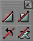
これらの機能を使用すると、ブラシをクリップし、クリッピングプレーンを移動し、ブラシを分割することができます。Clip Selected Brush (選択したブラシをクリップ)
 この機能を使用すると、選択状態のブラシがクリップされます (上記のブラシクリッピングマーカー機能でクリッピングマーカーを作成した場所から)。ブラシは常にクリッピングプレーンの方向にクリップされます。このプレーンは、クリッピングラインの中央からのびた細い線で表示されています。
この機能を使用すると、選択状態のブラシがクリップされます (上記のブラシクリッピングマーカー機能でクリッピングマーカーを作成した場所から)。ブラシは常にクリッピングプレーンの方向にクリップされます。このプレーンは、クリッピングラインの中央からのびた細い線で表示されています。
Split Selected Brush (選択したブラシを分割)
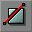
この機能では、選択状態のブラシがクリップされます (上記のブラシクリッピングマーカー機能でクリッピングマーカーを作成した場所から)。ブラシは常にクリッピングプレーンの方向にクリップされます。このプレーンは、クリッピングラインの中央からのびた細い線で表示されています。Flip Clipping Normal (クリッピング法線をフリップ)
 このボタンを使用して、クリッピングマーカーを使用して作成された線をフリップ (反転) します。この機能は、ブラシがクリップされる方向を決定するために使用されます。ブラシがクリップされる方向は、クリッピングラインの中央からのびた細い線で表示されています。
このボタンを使用して、クリッピングマーカーを使用して作成された線をフリップ (反転) します。この機能は、ブラシがクリップされる方向を決定するために使用されます。ブラシがクリップされる方向は、クリッピングラインの中央からのびた細い線で表示されています。
Delete Clipping Markers (クリッピングマーカーを削除)
 この機能を使用すると、環境内でクリッピングマーカーを削除します。同じことが、上記の [Brush Clipping Markers] (ブラシクリッピングマーカー) の選択を解除することで実現しますが、より多くのクリッピングが必要な場合や、新しいマーカーが必要である場合があります。
この機能を使用すると、環境内でクリッピングマーカーを削除します。同じことが、上記の [Brush Clipping Markers] (ブラシクリッピングマーカー) の選択を解除することで実現しますが、より多くのクリッピングが必要な場合や、新しいマーカーが必要である場合があります。
Brush Primitives (ブラシ プリミティブ)
 これらの機能を使用して、環境で使用するためのプリミティブブラシを作成します。ブラシビルダの寸法を変更するには、ブラシボタン上で右クリックします。すると、ウィンドウがポップアップ表示されます。このウィンドウ内に、直接または表現式 ([1024+256]など) で寸法を入力してください。以下に各ビルダブラシツールについて詳細に説明しています。
これらの機能を使用して、環境で使用するためのプリミティブブラシを作成します。ブラシビルダの寸法を変更するには、ブラシボタン上で右クリックします。すると、ウィンドウがポップアップ表示されます。このウィンドウ内に、直接または表現式 ([1024+256]など) で寸法を入力してください。以下に各ビルダブラシツールについて詳細に説明しています。
Create Cube (キューブの作成)
 この機能を使用すると、立方体または長方形のブブラシを作成できます。最後に使用した設定からブラシを作成するには、このボタンを左クリックするだけです。または、新しい設定を入力するには、ボタンを右クリックし、表示されるメニューに従って操作を行います。
この機能を使用すると、立方体または長方形のブブラシを作成できます。最後に使用した設定からブラシを作成するには、このボタンを左クリックするだけです。または、新しい設定を入力するには、ボタンを右クリックし、表示されるメニューに従って操作を行います。
 キューブ プリミティブの設定を以下に説明しています。
キューブ プリミティブの設定を以下に説明しています。
| Height (高さ) | 作成されるブラシの高さ。 |
| Width (幅) | 作成されるブラシの幅。 |
| Breadth (奥行き) | 作成されるブラシの奥行き。 |
| WallThickness (壁の厚さ) | このブラシについてHollow (空洞) の設定が選択されている場合、これはブラシの壁の厚さを示します。 |
| GroupName (グループ名) | 後でブラシを検索またはソートするためのオプションの入力項目。 |
| Hollow (空洞) | この設定は上記のWallThickness設定と共に使用します。この設定がTrueの場合、ブラシは段ボール箱－中は空洞で、壁だけがソリッド－として作成されます。 |
| Tessellated (モザイク) | この設定がTrueの場合、ブラシのフェイスは四角形ではなく三角形から作成されます。この機能によって、HOMのインスタンス数が劇的に減少されるので、そのブラシに対して頂点編集を行う予定である場合に便利です。この設定がTrueになっている場合、このブラシ内で3つを超える頂点を持つポリゴンは作成されません。つまり、このサーフェスで占められているプレーンから頂点を取り除くことが不可能になります。 |
Create Curved Stair (カーブ階段を作成)
 このオプションは、カーブした階段 (らせん階段)を作成します。この階段はグラウンドに到達しています。つまり、作成される各段は、グラウンドから作成され、必要な高さまで伸ばされます。
このオプションは、カーブした階段 (らせん階段)を作成します。この階段はグラウンドに到達しています。つまり、作成される各段は、グラウンドから作成され、必要な高さまで伸ばされます。
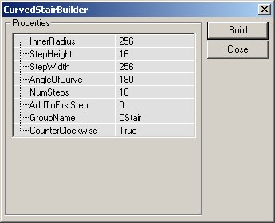
下記の設定を入力して、階段を変更できます。| InnerRadius (内径) | 階段の最も内側の半径を変更します。この設定は1単位以上でなければなりません。数値が大きいほど、ブラシの中心部分の面積が大きくなります。 |
| StepHeight (段の高さ) | 各段はこの設定の値の高さで作成され、段毎に高さが加えられます。16が値として使用されていれば、最初の段は地面から16単位の高さになり、次の段は32単位、その次は48単位というふうになります。 |
| StepWidth (段の幅) | 階段の幅を設定します。階段の全体半径は、InnerRadiusにこの値を加えることで算出されます。そのため、InnerRadiusが256単位に設定されている場合、段の幅を256単位に設定すると、階段の幅は256単位となり、全体の半径 (階段の外回り) は512単位となります。 |
| AngleOfCurve (カーブの角度) | 階段の丸みを設定します。値を90に設定すると、階段は全体で90度回転します。360に設定すると、階段が一周します。 |
| NumSteps (階段数) | 階段を構成する総段数です。これは曲線の角度には影響せず、単に階段の総段数のみを設定することにご注意ください。 |
| AddToFirstStep (第1段に追加) | この設定は1段目に特定の高さを追加します。この高さは、その後に作成される各段の基礎高さにも追加されます。階段の1段目の前に32単位の高さが必要な場合、この欄に32を入力すると、ブラシが正しく作成されます。 |
| GroupName (グループ名) | 後でブラシを検索またはソートするためのオプションの入力項目。 |
| CounterClockwise (左回り) | これはTrue/Falseフィールドです。右回りにカーブする階段 (低い段から高い段へ)、左回りにカーブする階段 (低い段から高い段へ) のいずれを生成するかを決定します。 |
Create Spiral Stair (らせん階段を作成)
 この機能を使用して、らせん階段を作成します。カーブ階段に少し似ていますが、このブラシでは各段の厚みが段の高さと等しくなった階段が作成されます。そのため、720度回転するらせん階段も作ることができます。
この機能を使用して、らせん階段を作成します。カーブ階段に少し似ていますが、このブラシでは各段の厚みが段の高さと等しくなった階段が作成されます。そのため、720度回転するらせん階段も作ることができます。
 Spiral Staircaseの設定を以下に説明しています。
Spiral Staircaseの設定を以下に説明しています。
| InnerRadius (内径) | らせん階段の内側の半径を設定します。 |
| StepWidth (段の幅) | 階段の各段の実際の幅です。 |
| StepHeight (段の高さ) | 各段の高さ。この値を階段の段数にかけると、階段全体の高さが決まります。 |
| StepThickness (段の厚さ) | 各段の厚みがどれだけになるかを決定します。各段の垂直高さは、階段全体の高さとは関係なく、美的な外観のみに影響します。 |
| NumStepsPer360 (360度あたりの段数) | 360度回転を構成する総段数です。この値が大きいほど、階段が一周するまでに多くの段数が必要になります。 |
| NumSteps (階段数) | ブラシ内で作成される実際の段数です。NumStepsPer360 欄に値32が入力されており、この欄の値が17の場合、階段は半周しかしません。ただし、33が入力されていれば、階段は1周します。この値には、必要な段数より1つ多い段数を入力する必要があります。 |
| GroupName (グループ名) | 後でブラシを検索またはソートするためのオプションの入力項目。 |
| SlopedCeiling (スロープド シーリング) | TrueまたはFalse値を使用して、ブラシの下側を階段状にするか、スムーズな表面にするかどうかを指定します。 |
| SlopedFloor (スロープド フロア) | 上記の値と同様、階段の表面がスロープ状か、階段状になるかを設定します。ただし、この設定ではブラシの実際の上面を処理します。この値がTrueに設定されると、階段は、階段ではなく丸いスロープのような外観になります。 |
| CounterClockWise (反時計回り) | これはTrue/Falseフィールドです。右回りにカーブする階段 (低い段から高い段へ)、左回りにカーブする階段 (低い段から高い段へ) のいずれを生成するかを決定します。 |
Create Linear Stair (直線階段を作成)
 このツールを使用すると、[Create Curved Stair] (カーブ階段を作成) に似ているものの、まっすぐな階段が作成されます。
このツールを使用すると、[Create Curved Stair] (カーブ階段を作成) に似ているものの、まっすぐな階段が作成されます。
 下記の設定を入力して、階段を変更できます。
下記の設定を入力して、階段を変更できます。
| StepLength (段の長さ) | 階段の各段の上の長さです。 |
| StepWidth (段の幅) | 階段の各段の実際の幅です。 |
| StepHeight (段の高さ) | 各段の高さ。この値を階段の段数にかけると、階段全体の高さが決まります。 |
| NumSteps (階段数) | 階段全体の長さを決定します。上記の図内にある設定の場合、この階段をビルドすると、長さ256単位の階段が作成されます (NumSteps 8 x StepLength 32 = 256)。 |
| AddToFirstStep (第1段に追加) | この設定は1段目に特定の高さを追加します。この高さは、その後に作成される各段の基礎高さにも追加されます。階段の1段目の前に32単位の高さが必要な場合、この欄に32を入力すると、ブラシが正しく作成されます。 |
| GroupName (グループ名) | 後でブラシを検索またはソートするためのオプションの入力項目。 |
BSPテレインを作成する
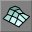
この機能を使用して、特別なタイプのブラシを作成します。BSPベースのテレインを作成するために使用できます。また、別の要求事項に応じて頂点を編集することができます。このブラシはキューブと似ていますが、片面にモザイク状のメッシュが用意されているため、簡単で安定した頂点編集が可能です。 Linear Staircaseの設定を以下に説明しています。
Linear Staircaseの設定を以下に説明しています。
| Height (高さ) | これによって、ブラシ全体の高さが決まります。 |
| Width (幅) | これによって、ブラシが作成される幅が決まります。 |
| Breadth (奥行き) | ここにブラシの奥行きを入力します。 |
| WidthSegments (幅セグメント数) | ブラシの幅に沿ってモザイクを作成するセグメント数です。ただし、このフィールドは、ブラシの幅を自動的に拡大しません。 |
| DepthSegments (奥行きセグメント数) | 上記と同じですが、ブラシの奥行きに沿ってモザイクが作成されるセグメント数を設定します。 |
| GroupName (グループ名) | 後でブラシを検索またはソートするためのオプションの入力項目。 |
Create Sheet (シートを作成)
 このツールを使用して、シートまたは平らなポリゴンを作成します。ただし、このポリゴンは、プレーヤをブロックできません。作成されたポリゴンは四角形になります。
このツールを使用して、シートまたは平らなポリゴンを作成します。ただし、このポリゴンは、プレーヤをブロックできません。作成されたポリゴンは四角形になります。
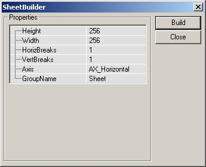
Sheet Brush Builder (シートブラシ ビルダ) の設定を以下に説明しています。| Height (高さ) | ブラシの高さです (縦に置かれると仮定した場合)。 |
| Width (幅) | ブラシの幅です。 |
| HorizBreaks (水平分割) | シートブラシを複数のセクションに分割し、後で別々に操作します。この設定は、ブラシ内の水平分割数を指定します。デフォルトは1で、水平面に沿ってセクションが1つ存在することを意味します。つまり、分割はされません。数が大きいほど、より多くのセクションが追加されることになります。 |
| VertBreaks (垂直分割) | 上記と同様ですが、垂直軸でシートを分割します。 |
| Axis (軸) | ここに入力する値は、シートが作成されるときにシートを位置合わせする軸を決定します。 |
| GroupName (グループ名) | 後でブラシを検索またはソートするためのオプションの入力項目。 |
Create Cylinder (シリンダを作成)
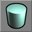
Cylinder Brush Builder (シリンダ ビルダ ブラシ) は、シリンダとパイプ ブラシを作成します。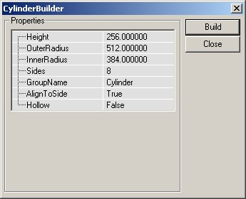
設定できる項目は以下の通りです。| Height (高さ) | シリンダ全体の高さ (1つの平面から反対側の平面まで)。 |
| OuterRadius (外側の半径) | シリンダの半径です。Hollow設定がTrueの場合、これは、パイプの外縁となります。 |
| InnerRadius (内径) | Hollow設定がTrueの場合、この値はパイプの内側の半径に使用されます。半径が256単位であっても、2つの設定値の間の差が16単位であれば、厚さは16単位となります。 |
| Sides (側面数) | シリンダを構成する側面数です。4を指定すると、Cubeビルダで作成できるプリミティブが作成されます。ここに入力する値は、3以上である必要である必要があります (2の場合シートを作成します)。 |
| GroupName (グループ名) | 後でブラシを検索またはソートするためのオプションの入力項目。 |
| AlignToSide (側面に調整) | AlignToSide 設定は、シリンダの側面で位置合わせをするかどうかを設定します。この設定がTrueの場合、下にあるブラシの側面が、X軸に調整、つまり位置合わせされます。側面の数が偶数の場合、当然ながら上の側面も調整されます。この設定がFalseに設定されている場合、ブラシの一番下は、2つの面が交差する部分になります。 |
| Hollow (空洞) | 必要に応じて固体または空洞のブラシを作成するために使用される、True/False設定。 |
Create Cone (コーンを作成)
 Coneはシリンダブラシに非常に似ていますが、1端がとがっています。
Coneはシリンダブラシに非常に似ていますが、1端がとがっています。
 Coneの設定は、Cylinderとほとんど同じですが、追加設定がいくつかあります。
Coneの設定は、Cylinderとほとんど同じですが、追加設定がいくつかあります。
| Height (高さ) | コーン全体の高さです。 |
| CapHeight (キャップ高さ) | コーンがHollowに設定されている場合、ブラシの内側のキャップ (上限) 高さを設定します。キャップ自体は、コーンの内部で形状のビルドをストップさせる面です。 |
| OuterRadius (外形) | コーンの半径です。 |
| InnerRadius (内径) | Hollow設定がTrueの場合、この値はコーン内側の半径に使用されます。半径が256単位であっても、2つの設定値の間の差が16単位であれば、厚さは16単位となります。 |
| Sides (辺) | コーンを構成する側面の数です。4面の場合、ピラミッドが作成されます。ここに入力する値は、3以上である必要である必要があります (2の場合シートを作成します)。 |
| GroupName (グループ名) | 後でブラシを検索またはソートするためのオプションの入力項目。 |
| AlignToSide (調整面) | AlignToSide 設定は、コーンの面を調整するかどうかを設定します。この設定がTrueの場合、ブラシの下の面が、X軸に調整、つまり位置合わせされます。側面数が偶数の場合、上の面も調整されます。この設定がFalseに設定されている場合、ブラシの一番下は、2つの面が交差する点になります。 |
| Hollow (空洞) | 必要に応じて固体または空洞のブラシを作成するために使用される、True/False設定。 |
Create Volumetric Shape (ボリュームシェイプを作成)
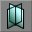
実際には、ボリュームシェイプは、1つのシェイプに結合された2つのシート ブラシの組み合わせです。このブラシは、本物の3Dが必要のない、椅子やたいまつの火のような効果に非常に便利です。または、レンダリングに余分なリソースを使用する価値のない形状の作成に使用されるポリゴンにも便利です。 ボリュームシェイプの設定を以下に説明しています。
ボリュームシェイプの設定を以下に説明しています。
| Height (高さ) | 完成したときのブラシの高さです。 |
| 半径 | ブラシの中点から各部分が伸びる距離です。 |
| NumSheets (シート数) | ボリュームシェイプの作成に使用されるシートブラシの数です。デフォルトは2です。2を設定すると、十字が作成されます。 |
| GroupName (グループ名) | 後でブラシを検索またはソートするためのオプションの入力項目。 |
Create Tetrahedron (四面体を作成)
 四面体は、球状オブジェクトです。このオブジェクトのフェイスは三角形であるため、わずかな補外によって、ハイポリゴンで、非常になめらかな球体が作成されます。
四面体は、球状オブジェクトです。このオブジェクトのフェイスは三角形であるため、わずかな補外によって、ハイポリゴンで、非常になめらかな球体が作成されます。
 Tetrahedronの設定を以下に説明しています。
Tetrahedronの設定を以下に説明しています。
| Radius (半径) | ブラシの中間から、最も外にある頂点までの距離 |
| SphereExtrapolation (球補外) | これによって、球体のなめらかさが決まります。補外の数が多くなればなるほど、球体を構成する三角形が小さくなり、より球に近い形状になります。 |
| GroupName (グループ名) | 後でブラシを検索またはソートするためのオプションの入力項目。 |
CSG操作
 これらの機能を使用することで、ブラシを加算、減算、公差、並びに非公差できます。また、移動するブラシ、ハードウェアブラシ (静的メッシュ) などを追加できます。
これらの機能を使用することで、ブラシを加算、減算、公差、並びに非公差できます。また、移動するブラシ、ハードウェアブラシ (静的メッシュ) などを追加できます。
Add Brush (ブラシ加算)
 このボタンをクリックすると、環境内のアクティブブラシ (赤いブラシアウトライン) の正確な位置に加算ブラシを作成します。アクティブブラシに、テクスチャやその他に関する情報が含まれている場合、その情報が新しい加算ブラシにコピーされます。含まれてない場合は、デフォルトのテクスチャ (泡状) が適用されます。
このボタンをクリックすると、環境内のアクティブブラシ (赤いブラシアウトライン) の正確な位置に加算ブラシを作成します。アクティブブラシに、テクスチャやその他に関する情報が含まれている場合、その情報が新しい加算ブラシにコピーされます。含まれてない場合は、デフォルトのテクスチャ (泡状) が適用されます。
Subtract Brush (ブラシ減算)
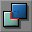
このボタンをクリックすると、環境内に減算ブラシを作成します。[Add Brush] (ブラシ加算) ボタンと同様、このボタンをクリックすると、この操作によって作成された減算ブラシにアクティブブラシ (赤いブラシアウトライン) の情報をコピーします。Intersect (ブラシ交差)
 このボタンを使用して、アクティブブラシをレベル内のジオメトリと交差させます。アクティブブラシは、現在環境内にあるBSPジオメトリと照合されます。交差の効果として、ブラシの減算ジオメトリと重なる部分が削除されます。これは、Xをアクティブブラシによって占められているスペースとし、Yをジオメトリの減算スペースとした、代数式で表示できます。これが真であると仮定すると、表現式は以下のようになります。
X = Y
これは、非交差機能と正反対の結果となります。
このボタンを使用して、アクティブブラシをレベル内のジオメトリと交差させます。アクティブブラシは、現在環境内にあるBSPジオメトリと照合されます。交差の効果として、ブラシの減算ジオメトリと重なる部分が削除されます。これは、Xをアクティブブラシによって占められているスペースとし、Yをジオメトリの減算スペースとした、代数式で表示できます。これが真であると仮定すると、表現式は以下のようになります。
X = Y
これは、非交差機能と正反対の結果となります。
De-Intersect Brush (非交差ブラシ)
 この機能は、アクティブなブラシの非交差を実行します。アクティブなブラシが、環境内のBSPジオメトリと照合され、加算BSPベースのジオメトリが存在する部分にみ再作成されます。交差オプションと同様、この機能は代数式で簡単に表現されます。Xをアクティブブラシが占めているスペースとし、Yをレベル内 (レベル全体は最初巨大な加算スペース、すなわち減算ジオメトリの逆であることを覚えておいてください) の任意の減算ジオメトリとすると、非交差の結果は以下のようになります。
X = < Y AND > Y (where = は不等)
X = Y
これにより、交差機能の正反対となります。
この機能は、アクティブなブラシの非交差を実行します。アクティブなブラシが、環境内のBSPジオメトリと照合され、加算BSPベースのジオメトリが存在する部分にみ再作成されます。交差オプションと同様、この機能は代数式で簡単に表現されます。Xをアクティブブラシが占めているスペースとし、Yをレベル内 (レベル全体は最初巨大な加算スペース、すなわち減算ジオメトリの逆であることを覚えておいてください) の任意の減算ジオメトリとすると、非交差の結果は以下のようになります。
X = < Y AND > Y (where = は不等)
X = Y
これにより、交差機能の正反対となります。
Add Special Brush (スペシャルブラシ追加)
 このボタンを使用して、特別なブラシを追加できます。これらのブラシの多くは、通常は使用されないか、または、異なるプロパティを使用して作成されます。そのため、これらのブラシには、特定のボタンが割り当てられていません。
ボタンをクリックすると、以下のダイアログボックスが開きます。
このボタンを使用して、特別なブラシを追加できます。これらのブラシの多くは、通常は使用されないか、または、異なるプロパティを使用して作成されます。そのため、これらのブラシには、特定のボタンが割り当てられていません。
ボタンをクリックすると、以下のダイアログボックスが開きます。
 あらかじめ設定されているブラシタイプの1つをドロップダウンメニューから選択することもできます。または、独自の設定を入力してブラシを作成できます。ドロップダウンメニュー内のブラシタイプについては以下に説明しています。リストからあらかじめ設定されたブラシを選択し、必要な変更を行うこともできます。
ブラシ、ブラシタイプ、およびジオメトリに関する詳細は、[UnrealEd Manual]の「Geometry」(ジオメトリ)章に記載されています。
あらかじめ設定されているブラシタイプの1つをドロップダウンメニューから選択することもできます。または、独自の設定を入力してブラシを作成できます。ドロップダウンメニュー内のブラシタイプについては以下に説明しています。リストからあらかじめ設定されたブラシを選択し、必要な変更を行うこともできます。
ブラシ、ブラシタイプ、およびジオメトリに関する詳細は、[UnrealEd Manual]の「Geometry」(ジオメトリ)章に記載されています。
- Invisible Collision Hull (非表示衝突ハル):このオプションでは、プレーヤの目に見えないブラシを作成します。すべての移動をブロックし、デフォルトで全アクタをブロックします。
- Zone Portal (ゾーン ポータル):ゾーンポータルであるブラシを作成します。ただし、ブラシは完全に非表示でソリッドなしです。
- Anti-Portal (アンチポータル):アンチポータルのブラシを作成します。このブラシは完全に非表示でソリッドなしのブラシです。
- Regular Brush (通常ブラシ):通常の加算ブラシです。このブラシと、[Add Brush] ボタンを使用して作成したブラシのデフォルト設定に差はありません (上記で詳細に説明しています)。
- Semi-Solid Brush (セミソリッド ブラシ):このプリセットは、セミソリッド ブラシを作成します。
- Non-Solid Brush (ソリッドなしブラシ):このプリセットは、ソリッドなしブラシを作成します。
Add StaticMesh (または Hardware Brush) (静的メッシュまたはハードウェアブラシを追加)
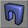
このアクションは、ハードウェア ブラシを作成します。この種類のジオメトリは、本書のジオメトリ章で詳しく説明されています。このアクションは、単にアクティブなブラシをハードウェア ブラシとして作成します。Add Mover Brush (ムーバーブラシ追加)
 このボタンを使用して、ムーバー ブラシを作成します。ムーバー ブラシは特別な種類のブラシで、設定された移動位置に限って環境内を動くことができます。より詳しい情報は、「ムーバー チュートリアル」文書に記載されています。ボタンを右クリックすると、エンジン アクタ クラスのうち、ムーバータイプの一覧が表示されます。プログラマーの方は、自社ソフトウェアに必要な他のムーバークラスを追加することができます。
このボタンを使用して、ムーバー ブラシを作成します。ムーバー ブラシは特別な種類のブラシで、設定された移動位置に限って環境内を動くことができます。より詳しい情報は、「ムーバー チュートリアル」文書に記載されています。ボタンを右クリックすると、エンジン アクタ クラスのうち、ムーバータイプの一覧が表示されます。プログラマーの方は、自社ソフトウェアに必要な他のムーバークラスを追加することができます。
Add Anti-Portal Brush (アンチポータル ブラシを追加)
 このボタンは、ゲーム内で表示されない非ソリッドのアウトラインにオレンジ色のボリュームを作成します。これは、レンダラーが必要以上の情報を描画することを防ぐための最適化方法として使用されます。アンチポータルに関する詳細は、「レベル最適化」文書を参照してください。
このボタンは、ゲーム内で表示されない非ソリッドのアウトラインにオレンジ色のボリュームを作成します。これは、レンダラーが必要以上の情報を描画することを防ぐための最適化方法として使用されます。アンチポータルに関する詳細は、「レベル最適化」文書を参照してください。
Add Volume (ボリュームを追加)
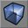
このツールを使用すると、レベル内の複数の領域に、一定の条件をシミュレートする効果 (水中や階段など) を作成できます特定のボリュームタイプを選択するには、[Add Volume] ボタンをクリックして、表示されるメニューから希望するボリュームを選択してください。 ボリュームに関する詳細は、「ボリュームチュートリアル」を参照してください。
ボリュームに関する詳細は、「ボリュームチュートリアル」を参照してください。
選択範囲と動作速度
 これらのボタンを使用すると、環境内の選択範囲を非表示にしたり (大きく複雑なマップやジオメトリの処理をするようになったときに、非常に便利です)、ビューポート内でカメラが動く早さを変更したりできます。
これらのボタンを使用すると、環境内の選択範囲を非表示にしたり (大きく複雑なマップやジオメトリの処理をするようになったときに、非常に便利です)、ビューポート内でカメラが動く早さを変更したりできます。
Show Selected Actors (選択したアクタのみ表示)
 この機能を使用すると、環境内において、選択されているアクタを除いて、選択されていないアクタをすべて非表示にします。これは、スクリプトシーケンスを作成しているとき、イベントラインを確認する必要がある場合に非常に便利です。開発プロセスの間は環境内にある他のものを無視できます。
この機能を使用すると、環境内において、選択されているアクタを除いて、選択されていないアクタをすべて非表示にします。これは、スクリプトシーケンスを作成しているとき、イベントラインを確認する必要がある場合に非常に便利です。開発プロセスの間は環境内にある他のものを無視できます。
Show Selected Actors (選択したアクタのみ表示)
この機能を使用すると、選択されているアクタを除き、環境内にある選択されていないアクタをすべて非表示にします。これは、スクリプトシーケンスを作成しているとき、イベントラインを確認する必要がある場合に非常に便利です。開発プロセスの間は環境内にある他のものを無視できます。アクタを非表示にすると、そのアクタがすべてのビューポートから削除されます。しかし、ブラシは3Dビュー内でレンダリングされることにご注意ください。
Hide Selected Actors (選択したアクタを非表示)
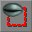
この機能は選択されたアクタをビューから非表示にします。他のアクタはすべて通常どおり表示されます。小さなスペースに多くのアクタが集まっている場合、エディタビュー内に特定のアクタのみを表示したい場合に便利です。アクタを非表示にすると、そのアクタがすべてのビューポートから削除されます。しかし、ブラシは3Dビュー内でレンダリングされることにご注意ください。Show All Actors (すべてのアクタを表示)
 この機能は、すべてのアクタを、アクタ表示用ビューポートで表示します (ビューポート表示モジュールの詳細は、本書の次のセクションを参照してください)。このボタンをクリックすると、エディタ内で非表示にされているアクタが表示されるようになります。
この機能は、すべてのアクタを、アクタ表示用ビューポートで表示します (ビューポート表示モジュールの詳細は、本書の次のセクションを参照してください)。このボタンをクリックすると、エディタ内で非表示にされているアクタが表示されるようになります。
Invert Selection (選択を反転)
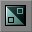
この機能を使用して、現在の選択範囲を変更できます。現在選択中のアクタの選択が解除され、選択されていないアクタが選択されます。Change Camera Speed (カメラスピードを変更)
 Tビューポート内のカメラ移動スピードの変数設定です。次の3つの設定があります。slow (カメラの動きはゆっくりですが、正確に動きます)、default (カメラはほとんどの場合において合理的な速度で移動します)、fast (カメラは非常に早く動きますが、高ズーム率でカメラを正確に動かすことは困難です)です。現在のカメラスピードはボタンに表示されています。一番小さいバーがハイライトされている場合、現在のカメラスピードはslowです。中間のバーがハイライトされている場合、デフォルトカメラスピードで、一番長いバーがハイライトされている場合、最も早いスピードとなっています。
Tビューポート内のカメラ移動スピードの変数設定です。次の3つの設定があります。slow (カメラの動きはゆっくりですが、正確に動きます)、default (カメラはほとんどの場合において合理的な速度で移動します)、fast (カメラは非常に早く動きますが、高ズーム率でカメラを正確に動かすことは困難です)です。現在のカメラスピードはボタンに表示されています。一番小さいバーがハイライトされている場合、現在のカメラスピードはslowです。中間のバーがハイライトされている場合、デフォルトカメラスピードで、一番長いバーがハイライトされている場合、最も早いスピードとなっています。
Mirror Brush and Miscellaneous (ブラシをミラーとその他: 2107+のみで使用可能なボタン)
注:これらのボタンは、一部の現在のビルドで表示されない場合がありますが、対象のブラシを右クリックして、[Transform] を選択することで機能の一部を見つけることができます。 これらの機能を使用することで、作成しているブラシをミラーできます。これによって、ブラシ内のオブジェクトをより容易に選択できます。しかし、これらの機能はUT2K3ビルドでのみご利用いただけます。
これらの機能を使用することで、作成しているブラシをミラーできます。これによって、ブラシ内のオブジェクトをより容易に選択できます。しかし、これらの機能はUT2K3ビルドでのみご利用いただけます。
Mirror X (X軸をミラー)
 このボタンを使用すると、X軸に対してブラシ (赤いアウトライン) をミラーします。
このボタンを使用すると、X軸に対してブラシ (赤いアウトライン) をミラーします。
Mirror Y (Y軸をミラー)
 このボタンを使用すると、Y軸に対してブラシをミラーします。
このボタンを使用すると、Y軸に対してブラシをミラーします。
Mirror Z (Z軸をミラー)
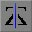
このボタンを使用すると、Z軸に対してブラシをミラーします。Select All Inside (内部のすべてを選択)
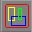
このアクションは、ビルダブラシのボリュームに交差するすべてのオブジェクトを選択します。Clip Z in WireFrame (ワイヤフレームでZ軸クリップ)
 情報を追加予定。
情報を追加予定。
Align View on Actor (アクタにビューを調整)
 ビューポート内でアクタを選択した後このボタンをクリックすると、アクタが中央になるよう2Dビューポートがすべて調整されます。3Dビューポートでは、カメラが選択されたアクタに近づき、アクタの方向を向きます。
ビューポート内でアクタを選択した後このボタンをクリックすると、アクタが中央になるよう2Dビューポートがすべて調整されます。3Dビューポートでは、カメラが選択されたアクタに近づき、アクタの方向を向きます。
ビューポート
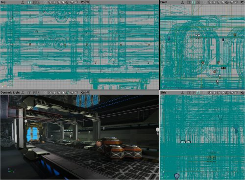
次の4つのアイテムは、開くビューポートです。これらのビューポートを変更したりカスタマイズしたりして必要に応じた情報を表示させることができます。ただし、通常は3つの2Dビュー (環境の上面、正面、側面図)と、3Dビューであるダイナミックライティング表示があります。このダイナミックライティング表示は実際にプレーヤの目に見えるワールドの3Dビューですが、実際の環境を再生している時は表示されない、すべてのアクタやその他の情報も表示されます。 すべてのビューの左下隅に、軸の組み合わせが表示されていることにご注意ください。これらの軸は、常にX、Y、Z面と向きを示しています。3Dビュー内でカメラ角度を回転および変更するときにとても便利です。
注意:Unreal Edは左手座標系を使用しています。ただし、上面ビューポートの軸は右手座標系を示しています。上面ビューポートの軸は、正しくないので、信じてはいけません。以下の図解をご覧ください。
すべてのビューの左下隅に、軸の組み合わせが表示されていることにご注意ください。これらの軸は、常にX、Y、Z面と向きを示しています。3Dビュー内でカメラ角度を回転および変更するときにとても便利です。
注意:Unreal Edは左手座標系を使用しています。ただし、上面ビューポートの軸は右手座標系を示しています。上面ビューポートの軸は、正しくないので、信じてはいけません。以下の図解をご覧ください。
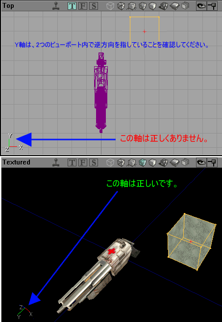
ビューポート制御ボタン
 すべてのビューポートの上部にはボタンがあります。最初の部分は表示内容を示しています(たとえば、Top (上面)、Dynamic Light (ダイナミックライト)、Perspective (パースペクティブ)、BSP Cuts (BSPカット)が含まれます)。これは、見ただけで簡単にわかるもので、説明の必要はありません。次に、小さなジョイスティック アイコンがあります。これは、ビューポートが環境の動的イメージを表示しているか、それとも静的イメージを表示しているかを示しています。ここでの違いは、静的ビューポートには、ダイナミックライト (ちらついたり、変わったりする光) や、その他の無数の要素が完全には表示されないことです。また、動的ビューポートでは、別のビューポートで変更されたブラシとアクタの位置が更新されます。この機能をオフにする必要はまったくなさそうに思えますが、実行しているとリソースが大量に消費されるため、マシンの速度を遅らせる原因となる場合があります。この機能をオンにしていないときのほうが、エディタは明らかに高速に動作します。ダイナミックライトのテストや、テクスチャのスクロールなどにこの機能を使用して、その後さらに編集したい場合は、通常 (静的) モードに戻すことをお勧めします。
すべてのビューポートの上部にはボタンがあります。最初の部分は表示内容を示しています(たとえば、Top (上面)、Dynamic Light (ダイナミックライト)、Perspective (パースペクティブ)、BSP Cuts (BSPカット)が含まれます)。これは、見ただけで簡単にわかるもので、説明の必要はありません。次に、小さなジョイスティック アイコンがあります。これは、ビューポートが環境の動的イメージを表示しているか、それとも静的イメージを表示しているかを示しています。ここでの違いは、静的ビューポートには、ダイナミックライト (ちらついたり、変わったりする光) や、その他の無数の要素が完全には表示されないことです。また、動的ビューポートでは、別のビューポートで変更されたブラシとアクタの位置が更新されます。この機能をオフにする必要はまったくなさそうに思えますが、実行しているとリソースが大量に消費されるため、マシンの速度を遅らせる原因となる場合があります。この機能をオンにしていないときのほうが、エディタは明らかに高速に動作します。ダイナミックライトのテストや、テクスチャのスクロールなどにこの機能を使用して、その後さらに編集したい場合は、通常 (静的) モードに戻すことをお勧めします。
ビューポートウィンドウ設定
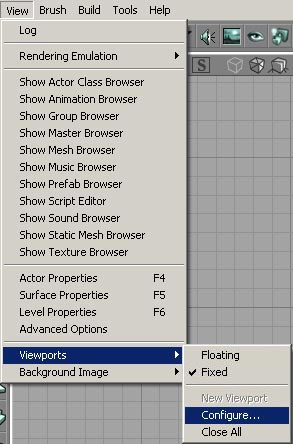
さらにビューポートのウィンドウサイズを変更できます。必要に応じて、4つのメインウィンドウにいろいろなレイアウトを選択することができます。この機能には、左に表示されているメニューを使用してアクセスできます。 メニューから選択すると、以下のウィンドウが開きます。このダイアログウィンドウから、希望する作業ビューポート表示に最も合ったレイアウトを選択できます。ダイアログウィンドウ内のアイコンは、ビューポートのレイアウトを示しています。3Dビューポートは、青いアイコンで示されます。ビューポートに表示される情報を変更するのは、非常に簡単です (以下に詳細に説明しています)。
メニューから選択すると、以下のウィンドウが開きます。このダイアログウィンドウから、希望する作業ビューポート表示に最も合ったレイアウトを選択できます。ダイアログウィンドウ内のアイコンは、ビューポートのレイアウトを示しています。3Dビューポートは、青いアイコンで示されます。ビューポートに表示される情報を変更するのは、非常に簡単です (以下に詳細に説明しています)。
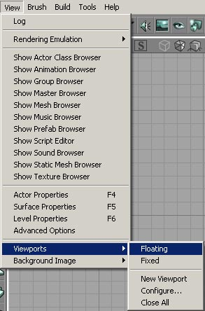
このメニューを選ぶと、スクリーン上でビューポートが再描画されます。これによって、個別のウィンドウとしてサイズを変更することができます。このモードでは、ビューポートを相互に重ねることもできます。それぞれのビューポートが、別のビューポートとは完全に独立して表示されます。このモードのビューポート表示を使用することで、追加のビューポートを開くこともできます。これにより、4つの標準ビューポート以上のビューポートを開くことができます。以下で、ビューポートについての詳細を説明しています。 環境内の1カ所にズームインした状態を維持したい場合、または別の表示モードを追加表示したい場合、ビューポートウィンドウを追加することができます (ディスプレイモードに関する詳細な情報は以下を参照)。ただし、この機能はビューポート表示がフローティング (上記参照) に設定されている場合のみ使用できます。
新しいビューポートを作成すると、マップを2Dの上面図で表示する小さいウィンドウがデフォルトとして表示されます。左の図は作成された複数のビューポートが重なり合っている様子を表示しています。
はっきりと違いを出したい場合、[View] メニューをクリックして一番下の[Background Image] (バックグラウンド画像) を選択することで、ビューポートの背後にあるバックグラウンドスペースを変更できます。これは、それほど有益な機能ではなく、(画像はビューポート内ではなく、その背後に置かれることさえ理解すれば) 説明の必要はありません。
環境内の1カ所にズームインした状態を維持したい場合、または別の表示モードを追加表示したい場合、ビューポートウィンドウを追加することができます (ディスプレイモードに関する詳細な情報は以下を参照)。ただし、この機能はビューポート表示がフローティング (上記参照) に設定されている場合のみ使用できます。
新しいビューポートを作成すると、マップを2Dの上面図で表示する小さいウィンドウがデフォルトとして表示されます。左の図は作成された複数のビューポートが重なり合っている様子を表示しています。
はっきりと違いを出したい場合、[View] メニューをクリックして一番下の[Background Image] (バックグラウンド画像) を選択することで、ビューポートの背後にあるバックグラウンドスペースを変更できます。これは、それほど有益な機能ではなく、(画像はビューポート内ではなく、その背後に置かれることさえ理解すれば) 説明の必要はありません。
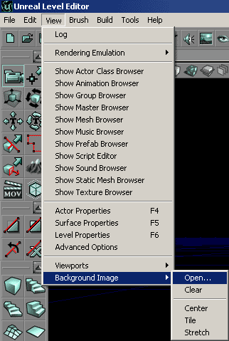
ビューポート表示モード
 次の3つのアイコンは、3つの2Dビュー (左から上面、正面、側面図) のうち環境がレンダリングされるビューを表示します (レンダリングに使用されているビューのアイコンが緑色でハイライトされます。その他は灰色になります)。
最後に、8つのアイコンがあります。これらは、7つの3Dモードのうちいずれでビューポートがレンダリングされているかを表示します。左から右の順で、以下に説明されているアイコンがあります。各説明の左にマップの画像を示しています。各ショットは、同じ環境を、まったく同じカメラ角度からみたものです。
次の3つのアイコンは、3つの2Dビュー (左から上面、正面、側面図) のうち環境がレンダリングされるビューを表示します (レンダリングに使用されているビューのアイコンが緑色でハイライトされます。その他は灰色になります)。
最後に、8つのアイコンがあります。これらは、7つの3Dモードのうちいずれでビューポートがレンダリングされているかを表示します。左から右の順で、以下に説明されているアイコンがあります。各説明の左にマップの画像を示しています。各ショットは、同じ環境を、まったく同じカメラ角度からみたものです。
 Perspective (パースペクティブ) - 環境はワイヤフレームビューでレンダリングされています。つまり、各ブラシが色のついたアウトラインとして描画されます。ブラシタイプは2Dビュー内と同じ色で描画されます。これにより、正しいエリアやブラシタイプを見つけ易くなります。
Perspective (パースペクティブ) - 環境はワイヤフレームビューでレンダリングされています。つまり、各ブラシが色のついたアウトラインとして描画されます。ブラシタイプは2Dビュー内と同じ色で描画されます。これにより、正しいエリアやブラシタイプを見つけ易くなります。
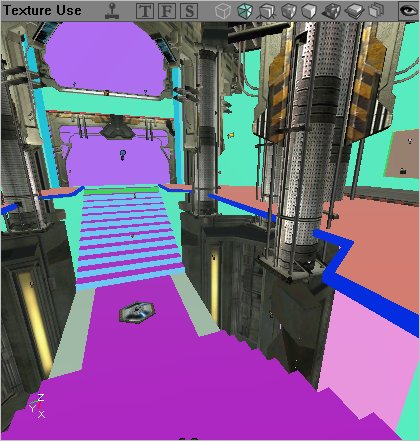
Texture Usage (テクスチャ使用) - 環境はライティングなしでレンダリングされています。各テクスチャは、同じ色で描画されています。これによって、多数のテクスチャを含むエリアを見つけるのが容易になります (おそらく、再生中に、グラフィック処理ハードウェアに高いリソース負荷をかけている部分)。ハードウェアブラシは通常通りのテクスチャで表示されます。ただし、ブラシ上のライティングはレンダリングされません。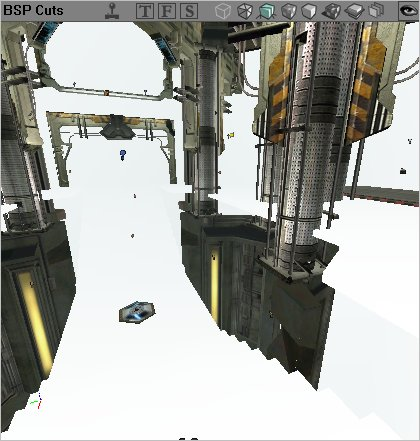
BSP Cuts (BSPカット) - 環境内で、エンジンがBSPカットを作成した場所を表示します。基本色で環境をレンダリングし、カットが作成された部分だけが異なるシェーディングで表示されます。これは、レベル内でBSPカットが多すぎる (そのためにフレームレートに悪影響を及ぼしている) 領域または特定のブラシを特定するのに便利です。 Textured (テクスチャ付) - 環境は、選択済みのテクスチャをサーフェスに貼り付けた状態で、3Dワールドとしてレンダリングされますがライトで光った状態にはなりません。テクスチャを調整して、正しい位置に配置されていることを確実にする際に、このモジュールが大変便利です。このモードには、まったくライティング効果がないことに注意してください。そのため、テクスチャは、レベル内にダイナミックライティングを使用した時とは異なる外観になる可能性があります (おそらくそうなるでしょう)。
Textured (テクスチャ付) - 環境は、選択済みのテクスチャをサーフェスに貼り付けた状態で、3Dワールドとしてレンダリングされますがライトで光った状態にはなりません。テクスチャを調整して、正しい位置に配置されていることを確実にする際に、このモジュールが大変便利です。このモードには、まったくライティング効果がないことに注意してください。そのため、テクスチャは、レベル内にダイナミックライティングを使用した時とは異なる外観になる可能性があります (おそらくそうなるでしょう)。
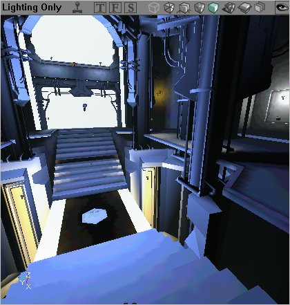
Lighting (ライティング) - 環境は、黒から白まで変化するシェーディングとしてレンダリングされます。BSPベース、ハードウェア、またはテレインのいずれであるかに関係なく、すべてのブラシは、光量についてのみレンダリングされます。サーフェスを照らすライトが明るいほど、そのサーフェスの色が、明るく表示されます。このモードは、正確なシャドウを作成するため (テクスチャのシェーディングの変化の影響で、エリア上に落とされる実際のライト量が正しく表示されないことがよくあります)、または (前者と同じ理由で) エリアの現在の照明をチェックするために良く使用されます。 Dynamic Lighting (ダイナミックライティング) - ビューポートがダイナミックライティングに設定されているとき、エンジン内でプレーヤが見るのと同じ完全なライティングをレンダリングします。しかし、ダイナミックライティングとは、動的性質を持つライトが (たとえば、トリガされる、または点滅するような) レンダリングされることを意味しないことにご注意ください。これらのライトは、最初のインスタンスでのみレンダリングされます (最初にエンジンが起動した時に表示された状態)。ライトやその他の動的効果を表示したい場合、動的に環境するためのビューポートを (上記の小さいジョイスティックアイコンをクリックすることで) 有効にする必要があります。
Dynamic Lighting (ダイナミックライティング) - ビューポートがダイナミックライティングに設定されているとき、エンジン内でプレーヤが見るのと同じ完全なライティングをレンダリングします。しかし、ダイナミックライティングとは、動的性質を持つライトが (たとえば、トリガされる、または点滅するような) レンダリングされることを意味しないことにご注意ください。これらのライトは、最初のインスタンスでのみレンダリングされます (最初にエンジンが起動した時に表示された状態)。ライトやその他の動的効果を表示したい場合、動的に環境するためのビューポートを (上記の小さいジョイスティックアイコンをクリックすることで) 有効にする必要があります。
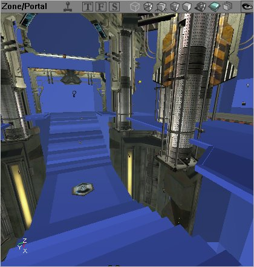
Zone Portal (ゾーンポータル) - ゾーンポータルモードは、各ゾーンを異なる色でレンダリングすると同時に、各ゾーン内で行われたBSPカットの場所を表示します (上記で行われたBSPカットと同様)。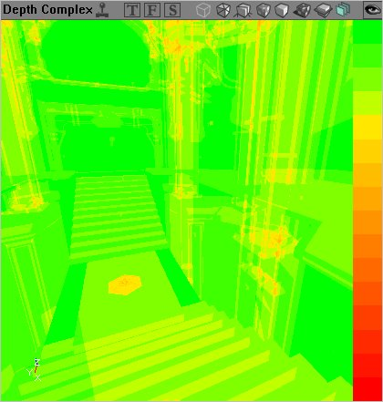
Depth Complexity (奥行き複合度) - このビューは、特定の環境でフレームレートを低下させている原因を追跡する、優れた方法です。緑から赤に徐々に変わる色は、環境が正しくレンダリングされるために、レンダリング対象によって必要とされるパス数を示しています。緑のエリアは、単一のパスだけでレンダリングできるエリアで、オレンジは2、3のパスを必要とするエリア、赤はレンダリングに必要なパス数が多すぎるエリアであることを示しています。赤いエリアは、できるだけ最適なフレームレートを得るために補正が必要なエリアです。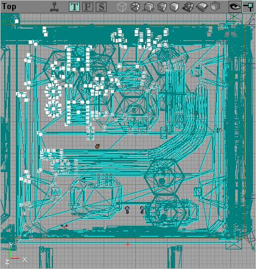
Large Vertices (大きい頂点) - Large Verticesは、名前の示す通り、選択されたブラシ状の大きい頂点を表示します。上図の左上半分には、選択済みのブラシ状の大きな頂点が集まっています。非BSPブラシ上では、これらを編集できないことにご注意ください。 適切なアイコンをクリックすることで、環境をレンダリングするビューポートを変えることができます。または、アイコンがある小さいバーを右クリックして、モードを変更してください (以下に詳細を説明しています)。その他のビューポートメニュー
 ビューポート ツールバー上で右クリックすることで、表示方法やレンダリング方法を変更できます。
どのビューポートでもバーの上で右クリックすると、以下のオプションが表示されます。
ビューポート ツールバー上で右クリックすることで、表示方法やレンダリング方法を変更できます。
どのビューポートでもバーの上で右クリックすると、以下のオプションが表示されます。
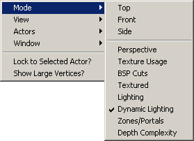
これらを使用すると、ウィンドウをどのビューモードにするかを選択できます。それぞれのモードを以下に説明します。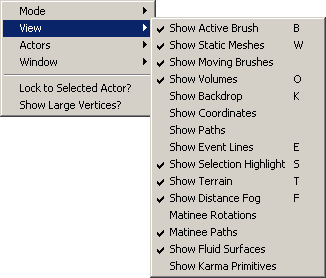
下図のプルダウンメニューからオプションを選択すると、レベルを構成する様々な要素を表示したり隠したりすることができます。 このプルダウンメニューを使用して、レベル内のアクタの表示モードを設定できます。 数のオプションからは、エディタ内のビューポートを16ビットと32ビットカラーのどちらで表示するかを選択できます。
数のオプションからは、エディタ内のビューポートを16ビットと32ビットカラーのどちらで表示するかを選択できます。
コマンドプロンプトと設定
 エディタの追加変更を行い、いくつかの簡単なプレファレンスを設定し (ログに追加するかコマンド設定をそのまま行う) コマンドプロンプトにコマンドを入力できる追加のツールがあります。この画像は、印刷用のページに収まるよう編集されています。
(DrawScale3D フィールドは、v2226+ ビルドでのみご利用いただけます。)
エディタの追加変更を行い、いくつかの簡単なプレファレンスを設定し (ログに追加するかコマンド設定をそのまま行う) コマンドプロンプトにコマンドを入力できる追加のツールがあります。この画像は、印刷用のページに収まるよう編集されています。
(DrawScale3D フィールドは、v2226+ ビルドでのみご利用いただけます。)
コマンドプロンプトとログウィンドウ
コマンドプロンプトを使用すると、エディタにコンソールコマンドを入力できます。一部のコマンドを使用すると、ビューポート内に情報が表示されますが、その他のコマンドを入力すると、ログウィンドウに情報が出力されます。コマンドプロンプト
 コマンドプロンプトを使用すると、エディタに直接コマンドを入力できるだけです。正しいコマンドを入力することで、エディタ内のボタンをクリックするのと同じ効果を得ることができますが、ボタンに割り当てられていない数多くのコマンドがあり、それらをコマンドプロンプトに入力できます。コマンドプロンプトも、メモリ内で使用された最後のコマンドを保存します。最後に入力されたコマンドにアクセスするには、コマンドプロンプトの右側にあるボタンをクリックしてください。ドロップダウンメニューが開きます。
コマンドプロンプトを使用すると、エディタに直接コマンドを入力できるだけです。正しいコマンドを入力することで、エディタ内のボタンをクリックするのと同じ効果を得ることができますが、ボタンに割り当てられていない数多くのコマンドがあり、それらをコマンドプロンプトに入力できます。コマンドプロンプトも、メモリ内で使用された最後のコマンドを保存します。最後に入力されたコマンドにアクセスするには、コマンドプロンプトの右側にあるボタンをクリックしてください。ドロップダウンメニューが開きます。
ログウィンドウ
ログウィンドウは、現在のUnrealエディタ ログを表示します。エディタログは多くの有益な情報を出力します。また、ログにのみ情報を出力するコマンドも数多くあります (主に情報検索クエリです。たとえば、テクスチャの総合使用状況や、類似したグローバル情報など)。 このボタンを押すと、以下のようなウィンドウが表示されます。すべての情報が表示されるように、ウィンドウのサイズを変更できます。また、ログ内の情報を見つけるためにスクロールバーを利用できます。 ログウィンドウには、プロンプトもあり、コマンドプロンプトに直接コマンドを入力することも、直接そこにコマンドを入力することもできます。
ログウィンドウには、プロンプトもあり、コマンドプロンプトに直接コマンドを入力することも、直接そこにコマンドを入力することもできます。
Vertex Snap (頂点スナップ)
 このトグルコマンドは、ドラッグされるすべての頂点が、自動的にグリッドにスナップされるかどうかを設定します。エディタ内でブラシを操作し易くなるため、この設定を使用することを推奨します。このトグルスイッチがオフになっている場合、頂点が特定のグリッド交点上にあるように見えても (したがって、他の頂点からの特定の距離にあることを意味する)、実際にはわずかな距離だけ離れている場合があります (またはビューポートズーム倍数によっては、大きな距離がある場合があります)。さらに、グリッドにスナップされたブラシの方が、エンジンにとってはレンダリングが容易です。そのため、フレームレートが改善されます。頂点スナップは、エディタが現在使用しているグリッドに束縛されます (グリッドとグリッド設定については、以下の2項目に記載された情報を参照)。
ただし、スナップされるのはブラシと頂点だけであることに注意することが重要です。このトグルスイッチの設定にかかわらず、アイコンによって表示されるアクタ (たとえば光、トリガ、その他) はスナップされません。
このトグルコマンドは、ドラッグされるすべての頂点が、自動的にグリッドにスナップされるかどうかを設定します。エディタ内でブラシを操作し易くなるため、この設定を使用することを推奨します。このトグルスイッチがオフになっている場合、頂点が特定のグリッド交点上にあるように見えても (したがって、他の頂点からの特定の距離にあることを意味する)、実際にはわずかな距離だけ離れている場合があります (またはビューポートズーム倍数によっては、大きな距離がある場合があります)。さらに、グリッドにスナップされたブラシの方が、エンジンにとってはレンダリングが容易です。そのため、フレームレートが改善されます。頂点スナップは、エディタが現在使用しているグリッドに束縛されます (グリッドとグリッド設定については、以下の2項目に記載された情報を参照)。
ただし、スナップされるのはブラシと頂点だけであることに注意することが重要です。このトグルスイッチの設定にかかわらず、アイコンによって表示されるアクタ (たとえば光、トリガ、その他) はスナップされません。
Drag Grid (ドラッグ グリッド)
 ドラッグ グリッドは頂点スナップ機能に似た機能です。ただし、スクリーン内をドラッグされるブラシ全体を、グリッド上の特定のポイントにスナップします。この設定もまた、グリッドサイズ (次のポイントで説明されます) に束縛されます。ブラシを調整する方が、ドラッグ グリッドよりもはるかに容易であることにご注意ください。 (通常のビューポート ズームであると仮定して)エディタのごくわずかな距離を目で見ることは不可能です。それにもかかわらず、この距離は、大きな距離とまったく同じように処理されます。1単位の10分の1のソリッドスペースのエリアがあれば、数千単位の距離と同じようにプレーヤをブロックします。
ドラッグ グリッドは頂点スナップ機能に似た機能です。ただし、スクリーン内をドラッグされるブラシ全体を、グリッド上の特定のポイントにスナップします。この設定もまた、グリッドサイズ (次のポイントで説明されます) に束縛されます。ブラシを調整する方が、ドラッグ グリッドよりもはるかに容易であることにご注意ください。 (通常のビューポート ズームであると仮定して)エディタのごくわずかな距離を目で見ることは不可能です。それにもかかわらず、この距離は、大きな距離とまったく同じように処理されます。1単位の10分の1のソリッドスペースのエリアがあれば、数千単位の距離と同じようにプレーヤをブロックします。
Rotation Grid (回転グリッド)
 このトグルスイッチは、回転されるオブジェクトが自由に回転するか、回転グリッド上で回転するかどうかを設定します。回転グリッドが有効にされている場合、回転されるあらゆるブラシは、64回転単位で一周します。すなわち、回転グリッド1単位は5.625度となります。この機能は、ブラシを正確に回転するために使用できます。エディタ内の回転単位は非常に小さいため、この設定がなければ左に90度自由に回転させることはほとんど不可能です。ブラシをドラッグする時と同様、正確であるように見えても、必要な回転からブラシが数分 (度よりも小さい単位) 離れていることがしばしばあります。これがジオメトリに悪影響を及ぼしたり、正しく位置合わせできなかったりする可能性があります。
このトグルスイッチは、回転されるオブジェクトが自由に回転するか、回転グリッド上で回転するかどうかを設定します。回転グリッドが有効にされている場合、回転されるあらゆるブラシは、64回転単位で一周します。すなわち、回転グリッド1単位は5.625度となります。この機能は、ブラシを正確に回転するために使用できます。エディタ内の回転単位は非常に小さいため、この設定がなければ左に90度自由に回転させることはほとんど不可能です。ブラシをドラッグする時と同様、正確であるように見えても、必要な回転からブラシが数分 (度よりも小さい単位) 離れていることがしばしばあります。これがジオメトリに悪影響を及ぼしたり、正しく位置合わせできなかったりする可能性があります。
Maximize Viewport (ビューポートを最大にする: 2107+ のみ)
 (この機能はビルド2107以上でのみ提供されています)
アクティブなビューポート (白い枠のあるもの) を、ビューポートエリアいっぱいに最大化します。もう一度クリックすると、オリジナルサイズに戻ります。この機能は、フローティングおよび固定ビューポートの両方で使用できます。
(この機能はビルド2107以上でのみ提供されています)
アクティブなビューポート (白い枠のあるもの) を、ビューポートエリアいっぱいに最大化します。もう一度クリックすると、オリジナルサイズに戻ります。この機能は、フローティングおよび固定ビューポートの両方で使用できます。